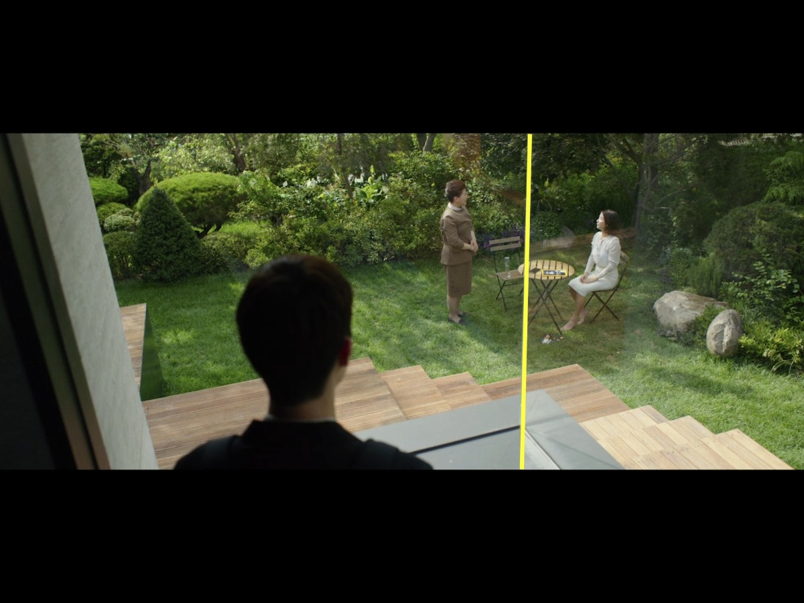
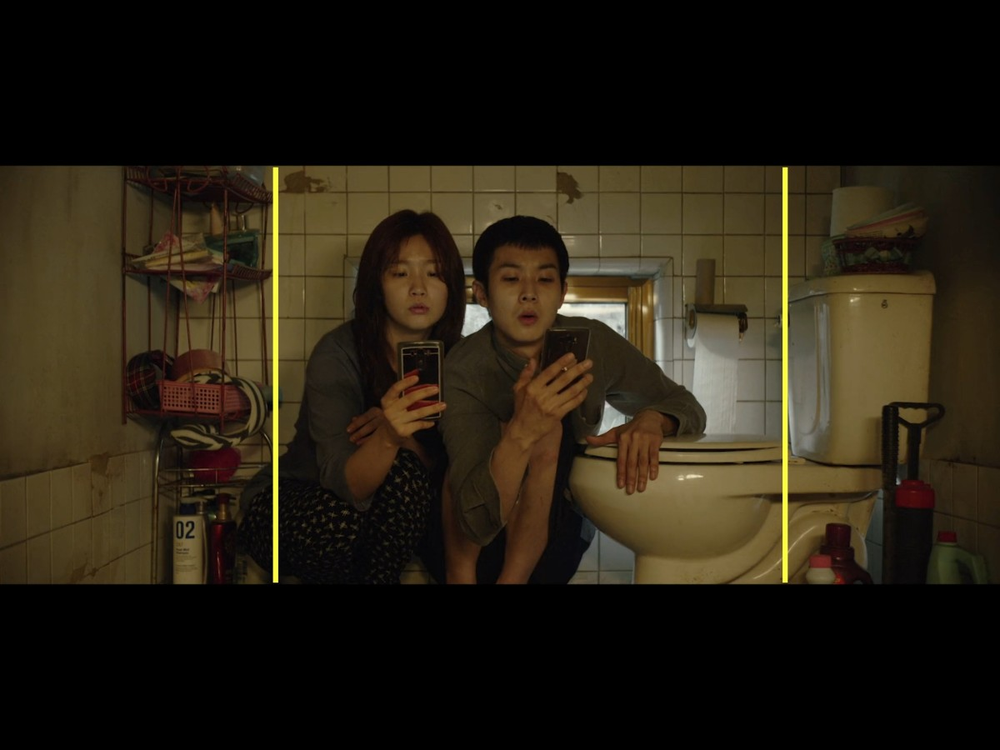
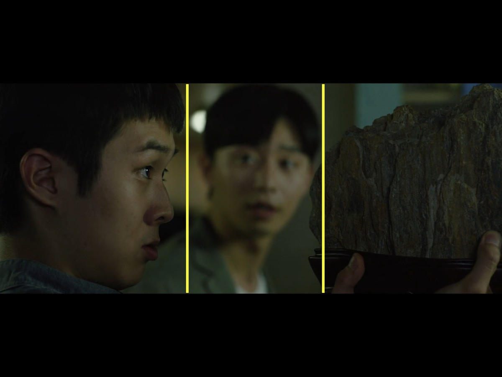
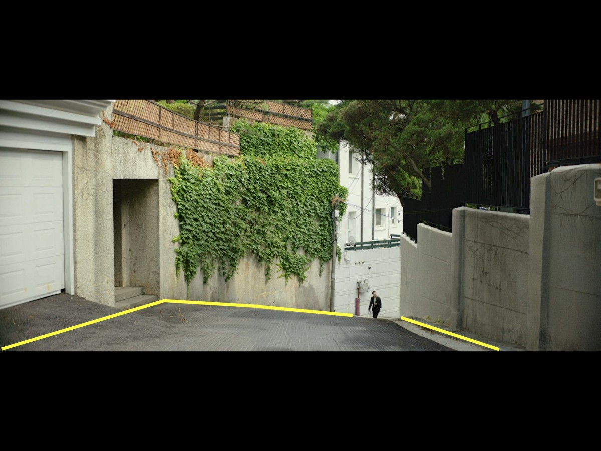
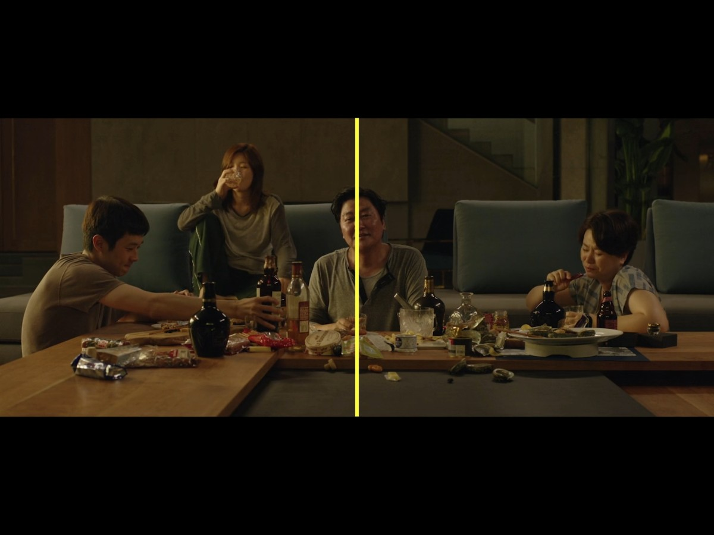
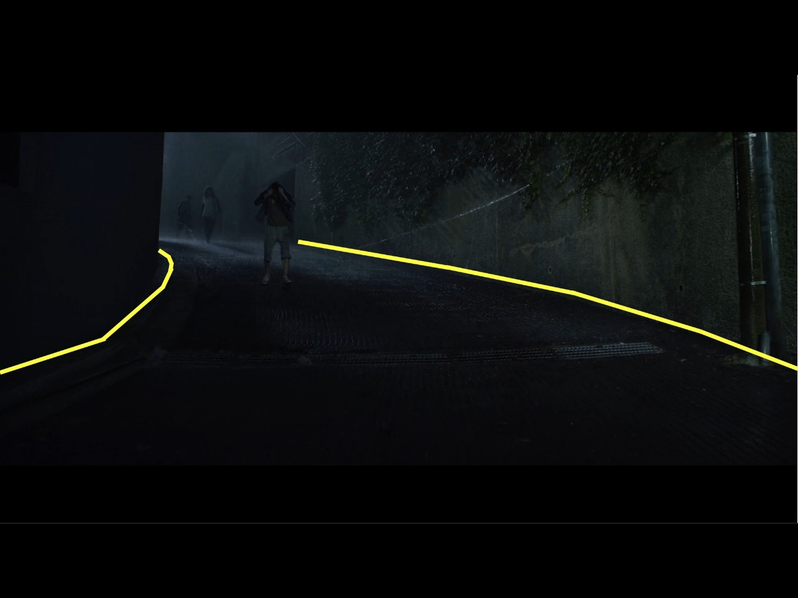
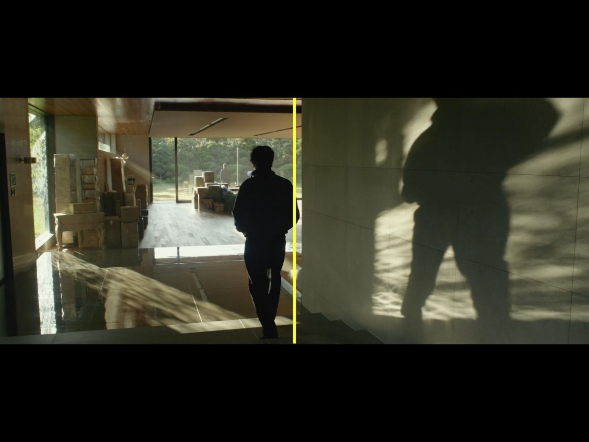
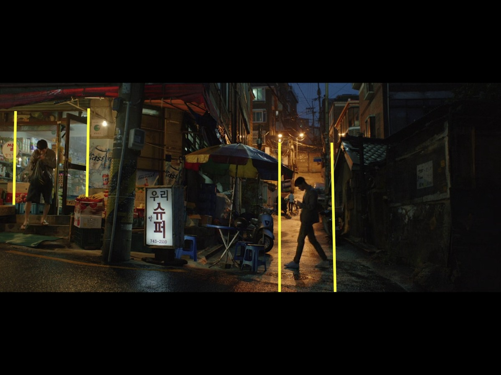

The Scholar's Rock
Supposed to bring wealth and luck. Ends up being heavy, useless, and eventually used as a weapon. Pretty much sums up the illusion of getting rich.

Tel-Hai College · Asian Cinema · 2025–2026
Class Divide Through Mise-en-Scène
Directed by Bong Joon-ho · 2019
Analysis by Shadi Abu Jaber
"You know what kind of plan never fails?
No plan at all." — Ki-taek, Parasite
In Parasite (2019), Bong Joon-ho tells the story of the Kim family and the Park family, two households on opposite ends of the class ladder in Seoul. What makes this film stand out isn't just the plot twists, but how everything you see on screen is doing work. The sets, the lighting, the way characters are placed in the frame. It all says something about class. In this project I'm looking at specific scenes and breaking down how Bong uses mise-en-scène (basically, everything visible in a shot) to show the divide between rich and poor without ever spelling it out directly.
.jpg)
Right from the opening shot, Ki-woo is sitting off to the side of the frame staring at his phone. There's a lot of empty space around him, which already makes you feel like he's alone. Behind him there's just a beat-up sofa and a fan. Nothing else. You can tell from the set alone that this family doesn't have much.
The colors are really dull here. Beige walls, dark green furniture, everything washed out. It feels lifeless on purpose, like the room reflects how stuck their lives are. There's also this strong light hitting Ki-woo from the side that creates heavy shadows on one half of his face. It gives the shot a dark, split feeling that comes back again and again throughout the movie.

This scene is kind of funny at first. Ki-woo and his sister are squeezed into the bathroom trying to get Wi-Fi. But visually it says a lot. They're literally boxed in by the toilet and the walls, and Bong frames it tight on purpose. There's no breathing room. It shows you how cramped and limited their daily life is.
Everything in the shot is brown and yellowish, kind of grimy looking. Even their clothes blend into the walls, like they're part of the mess. But even though the scene looks rough, you also see how determined they are. They won't give up on finding a signal. That energy is what keeps pushing the whole story forward.

The Scholar's Rock is supposed to bring wealth and good fortune. That's the tradition behind it. When Min hands it to Ki-woo, the camera keeps Ki-woo sharp in the foreground while Min goes blurry behind him. Your eye goes straight to the rock. It's a small object but the film treats it like a big deal, because it basically sets the whole plot in motion.
The colors are still cold and muted, greens and blues with no warmth. Even though this rock is supposed to represent hope and opportunity, the visual tone of the scene doesn't match that promise. The three points in the frame (Ki-woo, Min, and the rock) form a triangle that looks balanced, but the situation itself is anything but stable.

This sequence is one of the most obvious uses of space in the film. Ki-woo leaves his flat neighborhood, and then we see him walking uphill on a winding road, literally climbing up to the rich part of town. The road curves up like an S and the lines in the frame pull your eye toward the top. By the last shot he's at the top looking down. It's not subtle. Going up means going up in class.
What I noticed is that the colors actually change as he walks. Down in his neighborhood everything is flat and gray, but the higher he gets, the greener and brighter it looks. The sunlight gets warmer too. Bong basically uses the landscape as a visual scale of wealth. And Ki-woo in his dark suit stands out against all that greenery. He doesn't quite belong there, and you can see it.
When Ki-woo gets to the Park house, there's this shot where you see him in the front, the housekeeper and Mrs. Park in the middle, and the garden in the back. Three layers, separated by a glass wall. We're basically looking through Ki-woo's eyes, watching a world he's not part of from the outside.
There's a vertical line in the glass that splits the frame in two. Ki-woo and the housekeeper end up on one side (they're the same class) while Mrs. Park is on the other. The garden behind her is super green and bright compared to where Ki-woo just came from. The outside is flooded with natural light but the inside where Ki-woo stands is darker. Even the lighting is showing you who has what.

With the Parks gone, the Kims sit down and eat at their table like they own the place. The way it's framed, with the father in the center and everyone spread out around him, looks a lot like da Vinci's Last Supper. For a moment they have this dignity and space they never get in their own basement.
The whole scene is warm. Oranges, yellows, soft lighting. It's the opposite of the cold tones from their semi-basement. But that's the trick. This comfort isn't theirs, they're just borrowing it. And just like the biblical Last Supper, it's right before everything falls apart. The warmth makes the disaster that follows feel even worse.

This is basically the reverse of the ascent scene. The Kims are running down the same roads, but now it's raining and the lines in the frame pull downward. That S-curve that earlier meant "climbing up" now means falling back. The rain water is flowing from the rich neighborhood down to their basement. Even nature follows the class hierarchy.
The colors go back to cold blues and greens, but right before they reach home, the frame turns red. It feels like danger, like they're heading into something bad. The lighting is almost completely dark at this point. Whatever illusion they had about making it into the upper class, it's completely gone.

Near the end, Ki-woo imagines his father walking out of the basement into sunlight. He's placed off to one side of the frame with all this empty space around him. His shadow on the wall turns him into a silhouette. Not a person anymore, just a shape. It could mean freedom, but it also feels lonely.
The colors finally go warm again. Yellows and soft browns, like the Park house scenes. But this time it's not real. It's just a dream. The only time the Kims get to exist in warm light is in someone's imagination. That says everything the film wants to say about who gets to live in comfort and who doesn't.
Recurring symbols and their cinematic function
Supposed to bring wealth and luck. Ends up being heavy, useless, and eventually used as a weapon. Pretty much sums up the illusion of getting rich.
Going up = getting richer. Going down = getting poorer. Every set of stairs in this film is basically a class diagram.
Rain flows downhill, from the Parks' hilltop to the Kims' flooded basement. Even the weather works against the poor.
You can see right through the glass walls in the Park house, but you can't cross them. The Kims can look at wealth all day but they just can't have it.

The Kims can fake their jobs and their manners, but they can't fake their smell. It's the one thing that always gives them away.
The basement is always dark, the hilltop house is always bright. Where you are on the class ladder literally decides how much light you get.
Personal viewing experience & broader context
The first half honestly had me laughing. The Kims are clever and you root for them. But the rain scene changed everything. Their basement floods while the Parks sleep peacefully upstairs, and I just sat there realizing I'd been laughing at poverty. What stuck with me most weren't the words but the images. Climbing up to the Park house, running back down in the rain, the glass walls, the bunker. It doesn't lecture you about inequality. It just shows you.
A lot of the film is specifically Korean. The banjiha basement apartments, the Scholar's Rock, the social dynamics. A Seoul viewer would catch things a Western audience would miss. But the core idea, rich on top, poor on the bottom, and you can't really cross that line, that exists everywhere. I think the film blew up globally because Bong kept it honest and specific instead of trying to make it "universal." The specificity is what made people connect.
It's a bit ironic that a film about people who can't afford to live above ground won the Oscar. Most people in that room are closer to the Parks than the Kims. For Korean viewers it's a social mirror; for Western audiences it's more of a thriller with a message. Both readings work. The fact that it became a global hit probably says more about our times than about the film itself. People everywhere feel the gap widening.
Before this course I just watched movies for the plot. Now I notice the frame. Where people are placed, the lighting, the colors. Parasite is perfect for this because nothing in it is random. The image I keep coming back to is Ki-woo's letter at the end, planning to buy the Park house and free his dad. You want to believe it. But the film already showed you it won't happen. The gap isn't about stairs or money. It's the system itself.